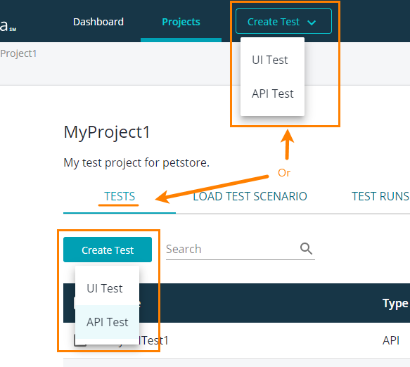

Уеб тестването е проверка на уеб приложението за потенциални повреди и дефекти преди да се пусне в употреба и да е достъпно от потребителите.
В зависимост от изискванията за уеб тестване, могат да се извършват следните видове/техники тестване:
А сега ще разгледаме по-подробно тестването на производителността, тъй като точно там се крие и същността на темата.
Тестването на производителността
Тестването на производителността гарантира работата на уеб приложението при всякакви натоварвания. Има няколко вида методи за тестване, които могат да се използват за определяне на производителността- тестване за издръжливост(Soak testing), спайк тестване(Spike testing), тестване за мащабируемост(Scalability testing ), тестване на капацитет(Capacity testing) и двата по-основни и разпространени метода- тестване на натоварването (Load testing) и стрес тестване (Stress testing), които ще разгледаме малко по-подробно.
[2]
Фигура 2. Тестване на производителността
Какво е тестване на натоварването (Load testing)?
Тестване на натоварването (Load testing) е нефункционален процес на тестване на софтуера, който помага на разработчиците да разберат поведението на системата при конкретна стойност на натоварване. При процеса на тестване на натоварването се симулира реалното натоварване като измерванията се извършват при нормални и тежки натоварвания. Този вид тестване спогама за установяването на бройката потребители, които могат да използват приложението. Тестването на натоварването се извършва към края на разработването на проекта.
[3]
Фигура 3. Тестване на натоварването (Load testing)
Какво е стрес тестване (Stress testing)?
Стрес тестването (Stress testing) е процес на тестване, който подлага софтуерната система на условия на екстремно натоварване. Тези условия спомагат проверката на нейната стабилност, устойчивост, поведение при обработка на грешки и възстановяване. По такъв начин се проверява системата, че тя да достигне своята точка на пречупване.
Стрес тестовете позволяват на софтуерните екипи да разберат мащабируемостта на работното натоварване. Те натоварват хардуерните ресурси като процесори, памет, твърди дискове и статични дискови устройства, като по този начин се определя потенциалната точка на прекъсване на приложението спрямо тези ресурси.
Освен това този процес на тестване също може да покаже колко време е необходимо на ключовите показатели за ефективност (KPI-Key Performance Indicator) да се върнат към нормалните си оперативни нива след някакво събитие.
[4]
Стрес тестването може да се изпълни преди или след като системата се пусне в употреба. То може да се изпълни и преди определени големи събития (например Черен петък), когато трафика на потребители е много голям.
[5]
LoadNinja е един от популярните инструменти за тестване на производителността на уеб приложения. Разработен е от SmartBear и е базиран на облак платформа.
Той помага на разработчиците, QA екипите и инжерените по производителност да проверяват дали уеб сървърите издържат екстремно натоварване и дали са стабилни и мащабируеми.
[6]
LoadNinja позволява на потребителите да разработват тестове без код, които намаляват до 50% времето за тестване. Освен това замества емулаторите на натоварване с действителни браузъри като по този начин постига скорост на нинджа с високи показатели за действие, базирани на браузър. LoadNinja съхранява взаимодействията на клиента, отстранява грешки в реално време и открива грешки в производителността.
[7]
LoadNinja помага с отговора на следните въпроси:
Колко потребителя могат да работят с моето уеб приложение без осезаемо забавяне на системата?
Какво натоварване може да срине системата?
Как времето за реакция се променя при увеличаване на натоварването?
Как промените в хардуера и софтуера се отразява на производителността на сървъра?
[8]
Тестване с LoadNinja
UI тествове
UI тестовете или скриптовете са последователност от индивидуални потребителски действия в тестваното уеб приложение. Те тестват уеб приложението като възпроизвеждат действията на потребителите като щраквания с мишката или въвеждане на данни на тествани уеб страници и др. Тези тестове симулират реални потребители, работещи с уеб страници.
Създаване на UI тест
За да се създаде UI тест, трябва да се запишат реалните действия на потребителя в тестваното уеб приложение. Един проект може да съдържа произволен брой UI тестове.
Фигура 6. Създаване на UI тест
Как да видим тестовете?
За да видите тестовете на потребителския интерфейс на вашия проект, отидете на Проекти, изберете проекта от списъка и превключете към раздела Тестове.
[9]
Фигура 7. Списък с тестове
Редактиране на тестове
Фигура 8. Редактиране на тест
API тестове
API тестът е поредица от заявки за API. Обикновено отговаря на последователността от API повиквания, които клиентското приложение изпраща към уеб услуга. API тестовете симулират извиквания на API методи на тествания уеб сървър.
[10]
Създаване на API тест

Фигура 9. Създаване на API тест
Как да видим тестовете?
Фигура 10. Списък с тестове
Редактиране на тестове
Фигура 11. Редактиране на тест
SmartMeter е инструмент за стрес тестване, който се използва за създаването на прост тест, който може да се имплементира в много тестови ситуации без писане на код. Предимно е графичен потребителски интерфейс, който няма необходими плъгини и прокси сървър настройки. Той изтегля автоматично генерирани документи с цялата информация за теста.
[11]
Характеристики
SmartMeter предлага следните функционалности:
Мониторинг на тестовата среда
Създават се лесно тестови сценарии, чрез вградения вътрешен браузър.
Може да се комбинира със Селениум (SELENIUM).
Резултати от тестове в реално време на няколко монитора
DYNATRACE APM интеграция
Автоматично архивиране на резултатите и тестовите сценарии
Лесно споделяне на тестовете, данните от тестовете и самият инструмент
Поддръжка на конвертиране на автоматични функционални тестове в тестове на производителността
Приложението Apache JMeter™ е софтуер с отворен код, разработено изцяло на Java, предназначено за измерване на производителността. Първоначално е проектиран за тестване на уеб приложения, но след това се разшири до други тестови функции.
[13]
Характеристики на JMeter
JMeter не е браузър,а работи на ниво протокол. Той изглежда като браузър (или по-скоро множество браузъри), що се отнася до уеб услугите и отдалечените услуги, инструментът обаче не изпълнява всички действия, поддържани от браузърите– не изпълнява Javascript, не изобразява HTML страниците, както го прави браузърът.
[14]
Този инструмент поддържа удобен за потребителя GUI, който е интерактивен и ясен. Той е независим, тъй като е проектиран с помощта на JAVA и може да работи на всяка платформа, която приема JVM като Window, Mac и Linux и т.н.
[15]
Предимства на JMeter
Инструментът е безплатен. Той е с отворен код и нулеви разходи за лицензиране.
Може да зарежда тестове за различни видове приложения – уеб приложения, уеб услуги, бази данни, LDAP, шел скриптове и др.
JMeter предлага функция за запис и възпроизвеждане, чрез които се правят по-лесно и бързо тестовите скриптове.
Предлага възможност за персонализиране според специфичните изисквания на разработчиците.
Има много онлайн уроци, свободно достъпни плъгини, които помагат в различни аспекти на създаването и анализа на скриптове.
Недостатъци на JMeter
Липсва функция за мрежова визуализация
Скриптовете в JMeter изискват известно ниво на опит и разбиране на различни елементи на тестовия план, регулярни изрази, обработка на сесии и т.н.
Не поддържа ajax, javascript и flash
Не изобразява уеб елементи
В сравнение с други инструменти за стрес тестване, редоставя много ограничени възможности за наблюдение на тестове в реално време.
[16]
Елементи на JMeter
Различните компоненти на JMeter се наричат елементи. Те имат специфични цели. Най-главните елементи са:
Група от нишки (Thread Group)
Групата от нишки (Thread Group) е колекция от нишки като всяка нишка представлява един потребител, използващ тестваното приложение. Той симулира една реална потребителска заявка към сървъра.
Фигура 18. Thread Group
Samplers
Sampler-ите помагат на Групата от нишки(Thread Group) да знае кой тип заявки (HTTP, FTP и т.н.) трябва да направи
Фигура 19. Samplers
Listeners
Listeners(бг. Превод слушателите) показват резултатите от изпълнението на теста. Те могат да показват резултати в различен формат, като например дърво, таблица, графика или регистрационен файл.
Фигура 20. Listeners
Configuration
Конфигурационните елементи(Configuration elements) се използват за настройка на стойности по подразбиране и променливи за по-късно използване от Sampler-и.
[17]
NeoLoad е инструмент, който се използва за провеждане на стрес тестове на всички уеб-базирани приложения и други мобилни приложения. Разработен е от Neotys.
Характеристики на NeoLoad
Може да бъде внедрен във всички видове сървъри.
С него могат да се извършват стрес тестове на приложения за бизнес разузнаване ERP и CRM и др.
[18]
NeoLoad е по-бърз стрес тест инстуремент в сравение с останалите традиционни инструменти
Поддържа различни рамки и протоколи като HTTP/2, HTML5, API, AngularJS, Web Socket, SOAP и др.
Има дизайн без код
Променя функционалните тестови скриптове в скриптове за тестване на производителността
Автоматично обновява тестовите скриптове
Генерира резултати от тестовете в реално време
[19]
Повторно използване на функционални тестове за производителност
[17] Sayantini, ”JMeter Tutorial for Beginners : All You Need To Know About Performance Testing”,последно променен 2021-12-14,
[https://www.edureka.co/blog/jmeter-tutorial/
], последно посетен на 2022-04-13